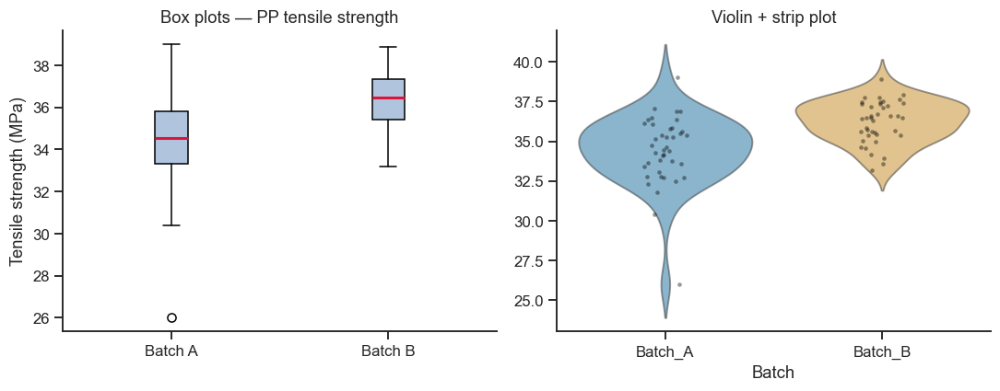
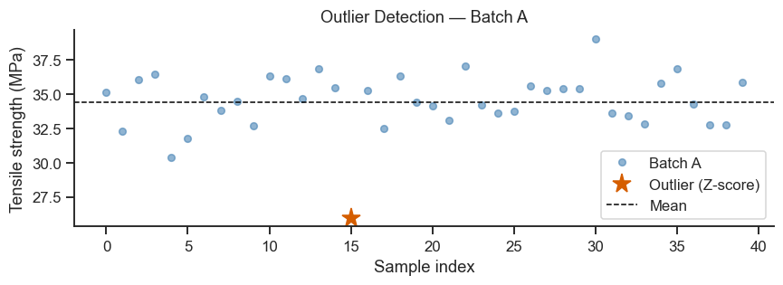
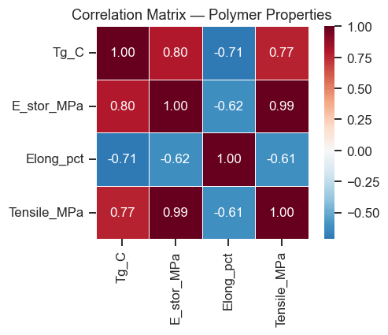

6. Descriptive Statistics#
Before any modelling, you need to understand your data: where it is centred, how spread out it is, whether any observations are outliers, and whether the distribution is approximately normal.
Topics
Measures of central tendency
Measures of spread
Quantiles and the five-number summary
Outlier detection (Z-score and IQR methods)
Covariance and correlation
Case study: polymer tensile properties
import numpy as np
import pandas as pd
import matplotlib.pyplot as plt
import seaborn as sns
from scipy import stats
sns.set_theme(style='ticks', palette='colorblind')
plt.rcParams.update({'figure.dpi': 110, 'font.size': 11})
rng = np.random.default_rng(42)
# ── Dataset: tensile strength from 40 polypropylene specimens ────────────────
# Two batches: batch A (standard process) and batch B (modified cooling)
n = 40
batch_A = rng.normal(loc=34.5, scale=2.1, size=n)
batch_B = rng.normal(loc=36.2, scale=1.8, size=n)
# Inject one outlier in batch A
batch_A[15] = 26.0
df = pd.DataFrame({'Batch_A': batch_A, 'Batch_B': batch_B})
df.head()
| Batch_A | Batch_B | |
|---|---|---|
| 0 | 35.139906 | 37.537858 |
| 1 | 32.316033 | 37.177678 |
| 2 | 36.075948 | 35.002083 |
| 3 | 36.475186 | 36.617890 |
| 4 | 30.402826 | 36.410034 |
6.1 Measures of Central Tendency#
“Central tendency” just means: if you had to summarise this whole batch of measurements with a single typical number, what would it be? There are three common answers, and they can disagree — which is informative in itself:
Mean (average) — add everything up, divide by the count. Simple and familiar, but every single value pulls on it, including unusually extreme ones.
Median — the middle value when everything is sorted. It only cares about rank, not magnitude, so one wildly off measurement barely moves it — this is what “robust to outliers” means in practice.
Mode — the most frequently occurring value. Less useful for continuous measurements (every value can be slightly different), more useful for categorical or rounded data.
Batch A below has a deliberately injected bad measurement (26.0 MPa) — you might expect that to leave an obvious “mean noticeably below median” signature. It does shift the mean, but by less than you might guess, and (as the take-home message below shows) not by more than ordinary sampling noise alone produces in Batch B, which has no injected outlier at all. A large mean–median gap is a hint of skew or contamination, but a small gap is not proof of a clean sample — which is exactly why Section 6.4 checks for outliers with a dedicated method instead of eyeballing this gap.
for name, data in [('Batch A', batch_A), ('Batch B', batch_B)]:
mean = np.mean(data)
median = np.median(data)
mode_res = stats.mode(data.round(1), keepdims=True)
print(f'{name}:')
print(f' Mean = {mean:.3f} MPa')
print(f' Median = {median:.3f} MPa ← robust to outliers')
print(f' Mode ≈ {mode_res.mode[0]:.1f} MPa (rounded to 1 dp)')
print(f' Mean vs Median diff: {abs(mean-median):.3f} MPa (skew/contamination signal)')
print()
Batch A:
Mean = 34.413 MPa
Median = 34.552 MPa ← robust to outliers
Mode ≈ 32.7 MPa (rounded to 1 dp)
Mean vs Median diff: 0.139 MPa (skew/contamination signal)
Batch B:
Mean = 36.224 MPa
Median = 36.471 MPa ← robust to outliers
Mode ≈ 35.6 MPa (rounded to 1 dp)
Mean vs Median diff: 0.247 MPa (skew/contamination signal)
Take-home message
Batch A’s mean (34.41 MPa) sits below its median (34.55 MPa), a gap of 0.14 MPa — but don’t read that gap itself as “the outlier’s effect”: swapping the original measurement at that position for 26.0 MPa shifts the mean by −0.17 MPa (from a counterfactual 34.58 MPa down to 34.41), while leaving the median completely unchanged at 34.55 MPa either way — a concrete, exact illustration of what “robust to outliers” means for the median, not an approximate one.
Batch B’s mean and median actually differ by more than Batch A’s do (0.25 MPa vs. 0.14 MPa) — despite Batch B carrying no injected outlier at all. Pure sampling variation in an otherwise clean, symmetric normal sample at n=40 can easily produce a mean-median gap this size on its own. The lesson is the opposite of “eyeball the gap to spot an outlier”: at this sample size the gap alone is a noisy signal, which is exactly why Section 6.4 uses a dedicated method (Z-score/IQR) instead of relying on it.
6.2 Measures of Spread#
Knowing the “typical” value isn’t enough — two batches can have the exact same mean while one is tightly clustered and the other is all over the place. Spread measures quantify that scatter:
Variance / standard deviation — the standard deviation is, loosely, the “typical distance” a measurement sits from the mean. Variance is the same idea before taking a square root (in squared units, which is why we usually report the standard deviation instead — it’s back in the original units, e.g. MPa).
Range — simplest possible measure (max − min), but entirely decided by the two most extreme points, so a single stray measurement swings it a lot.
IQR (interquartile range) — the width of the middle 50% of the data (Q3 − Q1). Like the median, it ignores extreme values, making it a more robust measure of spread when outliers are a concern.
CV% (coefficient of variation) — standard deviation as a percentage of the mean. Useful for comparing variability between datasets with very different scales (comparing a 5 MPa spread out of 30 MPa to a 5 MPa spread out of 300 MPa tells very different stories — CV% makes that comparison fair).
for name, data in [('Batch A', batch_A), ('Batch B', batch_B)]:
print(f'{name}:')
print(f' Variance (σ²) = {np.var(data, ddof=1):.4f}')
print(f' Std dev (σ) = {np.std(data, ddof=1):.4f} MPa (ddof=1 = sample std)')
print(f' Range = {data.max() - data.min():.3f} MPa')
q1, q3 = np.percentile(data, [25, 75])
iqr = q3 - q1
print(f' IQR = {iqr:.3f} MPa (Q3-Q1, robust spread)')
cv = np.std(data, ddof=1) / np.mean(data) * 100
print(f' CV% = {cv:.1f}% (relative variability)')
print()
Batch A:
Variance (σ²) = 4.7757
Std dev (σ) = 2.1853 MPa (ddof=1 = sample std)
Range = 12.997 MPa
IQR = 2.476 MPa (Q3-Q1, robust spread)
CV% = 6.4% (relative variability)
Batch B:
Variance (σ²) = 1.7249
Std dev (σ) = 1.3133 MPa (ddof=1 = sample std)
Range = 5.720 MPa
IQR = 1.913 MPa (Q3-Q1, robust spread)
CV% = 3.6% (relative variability)
Take-home message
Batch A’s range (13.0 MPa) is almost entirely the outlier’s doing — its IQR (2.48 MPa) is close to Batch B’s (1.91 MPa) despite that huge range gap, exactly the “robust to outliers” property Section 6.2 promised for the IQR versus the range.
CV% makes the two batches directly comparable despite their different means: Batch A is about 6.4% variable, Batch B about 3.6% — the modified cooling process (Batch B) is not just slightly stronger on average, it is also meaningfully more consistent, which matters as much as the mean for a process engineer choosing between them.
6.3 Five-Number Summary and Box Plot#
fig, axes = plt.subplots(1, 2, figsize=(10, 4))
# Box plot
ax = axes[0]
ax.boxplot([batch_A, batch_B], tick_labels=['Batch A', 'Batch B'],
patch_artist=True,
boxprops=dict(facecolor='lightsteelblue'),
medianprops=dict(color='crimson', lw=2))
ax.set_ylabel('Tensile strength (MPa)')
ax.set_title('Box plots — PP tensile strength')
sns.despine(ax=ax)
# Strip + violin overlay
ax = axes[1]
df_long = df.melt(var_name='Batch', value_name='Tensile_MPa')
sns.violinplot(data=df_long, x='Batch', y='Tensile_MPa', hue='Batch', ax=ax, inner=None,
palette='colorblind', legend=False, alpha=0.5)
sns.stripplot(data=df_long, x='Batch', y='Tensile_MPa', ax=ax,
color='black', alpha=0.4, size=3, jitter=True)
ax.set_title('Violin + strip plot')
ax.set_ylabel('')
sns.despine(ax=ax)
plt.tight_layout()
plt.show()
print('Five-number summary (Batch A):')
print(pd.Series(batch_A).describe().to_string())

Five-number summary (Batch A):
count 40.000000
mean 34.412969
std 2.185330
min 26.000000
25% 33.335730
50% 34.551691
75% 35.811729
max 38.997460
Take-home message
The 25th/50th/75th percentiles (33.34 / 34.55 / 35.81 MPa) are exactly the box edges and centre line in the plot on the left — the “five-number summary” printed above is not a separate fact from the box plot, it is the box plot, in numbers.
min(26.0) sits far below Q1 (33.34) whilemax(39.0) is a normal-looking distance above Q3 — a numeric version of “the low tail is doing something the high tail isn’t,” visible as the lone point below Batch A’s lower whisker.
6.4 Outlier Detection#
An outlier is a measurement that looks surprisingly far from the rest of the data. Both methods below formalise “surprisingly far” so the decision doesn’t rely on eyeballing a plot:
Z-score method#
Convert every value to “how many standard deviations away from the mean is it?” (\(z_i = (x_i - \bar{x}) / s\)). A point is a potential outlier if \(|z_i| > 3\) — recall the 68–95–99.7 rule (Section 1 of the theory page): under a normal distribution, being more than 3 standard deviations away happens less than 0.3% of the time, so it’s a good sign something unusual is going on.
IQR method#
A point is a potential outlier if it is below \(Q1 - 1.5 \times IQR\) or above \(Q3 + 1.5 \times IQR\) — the “whisker” boundaries you already saw on the box plot above. This method doesn’t assume the data is normally distributed, which makes it a safer default when you haven’t yet confirmed normality (Notebook 7).
Always investigate the cause — an outlier may be a measurement error, a transcription mistake, or a genuinely unusual sample worth studying. Neither method above tells you why a point is unusual — only that it’s worth a second look before you decide whether to keep, correct, or exclude it.
def find_outliers_zscore(data, threshold=3.0):
z = np.abs(stats.zscore(data))
return np.where(z > threshold)[0]
def find_outliers_iqr(data, k=1.5):
q1, q3 = np.percentile(data, [25, 75])
iqr = q3 - q1
lower, upper = q1 - k * iqr, q3 + k * iqr
return np.where((data < lower) | (data > upper))[0]
outliers_z = find_outliers_zscore(batch_A)
outliers_iqr = find_outliers_iqr(batch_A)
print('Batch A outliers (Z-score |z|>3):', outliers_z, '→ value:', batch_A[outliers_z].round(2))
print('Batch A outliers (IQR method): ', outliers_iqr, '→ value:', batch_A[outliers_iqr].round(2))
# Visualise
fig, ax = plt.subplots(figsize=(8, 3))
ax.plot(range(n), batch_A, 'o', color='steelblue', alpha=0.6, ms=5, label='Batch A')
ax.plot(outliers_z, batch_A[outliers_z], 'r*', ms=14, label='Outlier (Z-score)')
ax.axhline(np.mean(batch_A), ls='--', color='black', lw=1, label='Mean')
ax.set_xlabel('Sample index')
ax.set_ylabel('Tensile strength (MPa)')
ax.legend()
ax.set_title('Outlier Detection — Batch A')
sns.despine(ax=ax)
plt.tight_layout()
plt.show()
Batch A outliers (Z-score |z|>3): [15] → value: [26.]
Batch A outliers (IQR method): [15] → value: [26.]

Take-home message
Both the Z-score method and the IQR method flag the exact same point — sample index 15, value 26.0 MPa — which is reassuring: two methods built on different assumptions (normality vs. distribution-free) agree on the same answer.
Agreement isn’t guaranteed in general. Section 6.4 already flagged the IQR method as the safer default when normality hasn’t been confirmed yet (Notebook 7) — the more common situation in practice, and the reason both methods are worth knowing rather than picking one and trusting it blindly.
6.5 Covariance and Correlation#
Covariance asks: when one variable is above its own average, does the other variable tend to be above its average too (positive covariance), below (negative), or is there no consistent pattern (near zero)? Its raw value depends on the units of both variables, which makes it awkward to interpret directly.
Correlation fixes this by rescaling covariance to always fall between
−1 and +1, regardless of units: +1 means a perfect increasing straight-line
relationship, −1 a perfect decreasing one, and 0 means no linear
relationship (there could still be some other, non-straight-line pattern).
Pearson correlation (the default, df.corr()) specifically measures
straight-line association and is sensitive to outliers, since it is built
from means and squared deviations just like the mean and standard
deviation. Spearman correlation instead ranks the data first (like the
median does for central tendency) and then correlates the ranks — it
detects any consistently increasing or decreasing relationship, not just a
straight-line one, and is far less thrown off by a single extreme point.
# Generate multi-property polymer dataset
n = 60
Tg = rng.normal(90, 8, n) # glass transition temperature (°C)
E_stor = 1200 + 8 * (Tg - 90) + rng.normal(0, 50, n) # storage modulus (MPa)
elong = 180 - 1.5 * (Tg - 90) + rng.normal(0, 15, n) # elongation at break (%)
tensile_str = 32 + 0.15 * E_stor + rng.normal(0, 2, n) # tensile strength (MPa)
df_poly = pd.DataFrame({'Tg_C': Tg, 'E_stor_MPa': E_stor,
'Elong_pct': elong, 'Tensile_MPa': tensile_str})
corr = df_poly.corr()
print('Pearson correlation matrix:')
print(corr.round(3))
fig, ax = plt.subplots(figsize=(5, 4))
sns.heatmap(corr, annot=True, fmt='.2f', cmap='RdBu_r', center=0,
square=True, linewidths=0.5, ax=ax)
ax.set_title('Correlation Matrix — Polymer Properties')
plt.tight_layout()
plt.show()
Pearson correlation matrix:
Tg_C E_stor_MPa Elong_pct Tensile_MPa
Tg_C 1.000 0.797 -0.714 0.766
E_stor_MPa 0.797 1.000 -0.619 0.987
Elong_pct -0.714 -0.619 1.000 -0.611
Tensile_MPa 0.766 0.987 -0.611 1.000

Take-home message
Storage modulus and tensile strength move almost in lock-step (r=0.99) — by construction here, but in real data a correlation this high is worth a second look: are these really two independent pieces of evidence, or the same underlying property measured twice?
Elongation at break correlates negatively with everything else (r ≈ −0.6 to −0.7) — the classic stiffness/ductility trade-off: a polymer with a higher glass transition temperature and higher modulus tends to stretch less before it breaks.
None of this proves causation — correlation only says these properties move together, not that one causes another; all four could simply be downstream consequences of the same underlying polymer chemistry.
# Spearman rank correlation (robust to outliers and nonlinearity)
spearman, p_values = stats.spearmanr(df_poly)
if hasattr(spearman, '__len__'):
df_spearman = pd.DataFrame(spearman, index=df_poly.columns, columns=df_poly.columns)
print('Spearman correlation matrix:')
print(df_spearman.round(3))
else:
print('Spearman r =', round(spearman, 3), ' p =', round(p_values, 4))
Spearman correlation matrix:
Tg_C E_stor_MPa Elong_pct Tensile_MPa
Tg_C 1.000 0.783 -0.694 0.755
E_stor_MPa 0.783 1.000 -0.585 0.985
Elong_pct -0.694 -0.585 1.000 -0.587
Tensile_MPa 0.755 0.985 -0.587 1.000
Take-home message
Spearman’s values (e.g. 0.98 for storage modulus vs. tensile strength) sit close to Pearson’s (0.99) — a good sign the relationship really is close to a straight line, not just monotonic-but-curved. When the two disagree noticeably, that gap is itself a diagnostic that the relationship (or an outlier) isn’t linear — worth checking before trusting Pearson’s r alone.
Exercises#
Grubbs test: Look up
scipy.statsand implement the Grubbs test for a single outlier. Apply it tobatch_Aand report the test statistic and critical value at α=0.05.Cleaned statistics: Remove the outlier from
batch_Aand recompute mean, std, and CV%. How much did the mean change? How much did the std change?Bootstrapped confidence interval: Write a function
bootstrap_mean_ci(data, n_boot=2000, ci=0.95)that returns the 95% confidence interval of the mean using bootstrapping. Apply it to both batches and compare with the analytical±t·s/√ninterval.